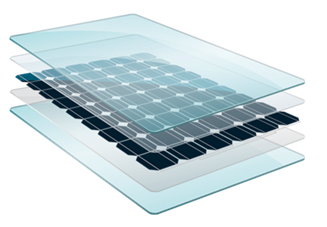

Volight Glass
O Volight Glass surge no mercado para fazer face a várias necessidades, quer de conforto visual, de conforto térmico e ainda necessidades energéticas. O propósito deste produto é de tornar os edifícios mais eficientes energeticamente, sendo possível através da transformação da luz solar incidente em energia elétrica. E ainda de tornar os edifícios visualmente mais agradáveis, ou seja, acabando com todas as soluções de sombreamento que se conhecem e utilizam nos dias de hoje, graças à possibilidade de o vidro se poder tornar mais ou menos opaco à passagem de luz.
Vidro Fotovoltaico
Conversão de Luz em Energia Elétrica
Maior Autonomia Energéica
Produção de Energia Limpa
Melhor Aproveitamento e Isolamento Térmico
Semelhante ao Vidro “Comum”
Investimento viável a Longo Prazo
Vidro Inteligente
Regular Opacidade e Translucidez
Maior Privacidade
Capacidade de Sombreamento
Design Dinâmico
Estética da Arquitetura
Investimento viável a Longo Prazo

O Volight Glass consiste na junção de duas tecnologias, o vidro fotovoltaico e o vidro inteligente. O vidro fotovoltaico é capaz de transformar uma dada percentagem de luz incidente em energia elétrica, recorrendo a uma pelicula de células fotovoltaicas práticamente invisiveis a olho nu, cerca de 70% de tranparência. E o vidro inteligente, que consiste numa camada de cristais liquidos, que ao ser polarizada com a passagem de mais ou menos corrente elétrica, é capaz de se tornar translucida, meio opaca, ou completamente opaca à passagem de luz.
Preço: 400€/m2
Potência por m2: 30W

Com esta solução, irá poupar na fatura mensal de energia, não só devido à energia gerada pelo vidro, mas também devido ao menor uso de sistemas AVAC. Ter casas mais elegantes, graças à redução de soluções de sombreamento antiquadas e com elevado grau de manutenção. Ter mais prazer no tempo que passa nas divisões graças ao controlo ajustável da iluminação. E ainda, muito importante, sentir que tem uma casa sustentável, moderna e eficiente.